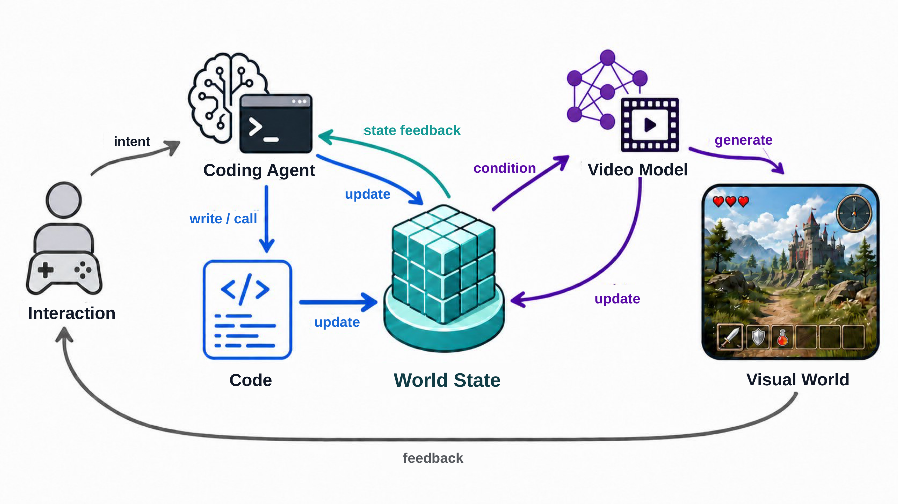
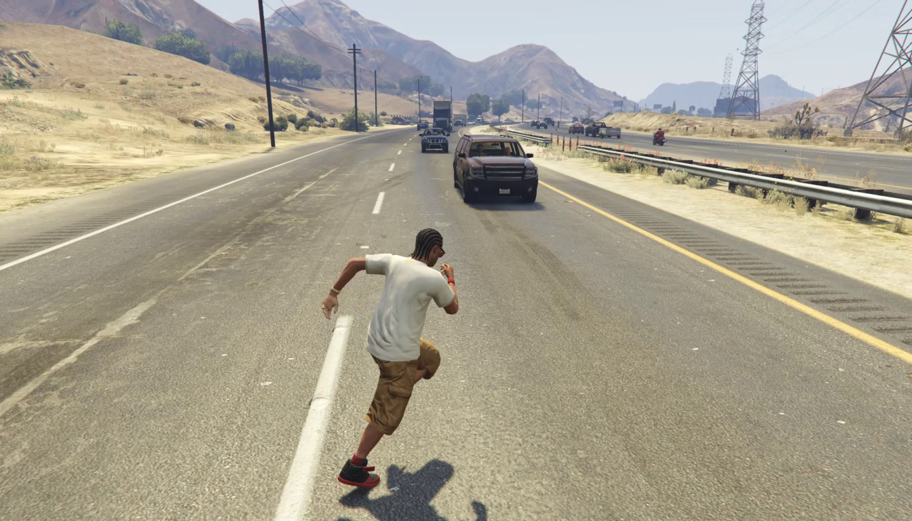
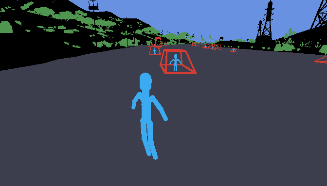
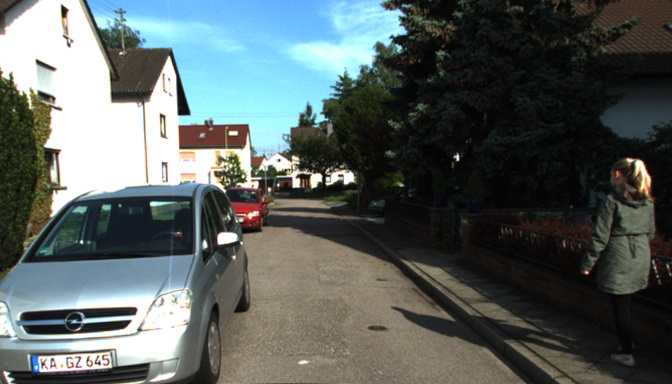
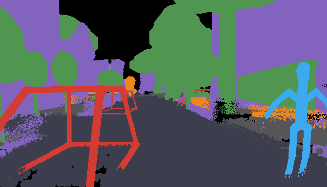

Code World Model: Coding Agent as World Brain
Coding agents update and control world states
Our framework evolves with advances in coding agents: stronger reasoning, planning, and coding capabilities enable richer, more coherent, and more persistent world evolution.
Long-Horizon Generation with Periodic Style Changes
A consistent world state unlocks limitless possibilities for visual experiences.
Gallery
Abstract
World models aim to simulate how complex environments evolve under actions and events, yet existing video-based world models primarily learn dynamics from visual observations, which reveal outcomes rather than the underlying knowledge, rules, and mechanisms governing world evolution. This makes it difficult to maintain persistent consequences and support coherent, open-ended evolution. We introduce Code World Model, a framework that separates world evolution from visual realization by combining the reasoning and coding capabilities of language models with the generative priors of video models. A coding agent serves as the world brain, reasoning about events and their consequences and generating executable code to maintain persistent world state and perform rule-consistent evolution. To connect executable state with visual generation, we introduce a proxy representation that encodes frame-wise spatiotemporal constraints and is compiled into a proxy video, which conditions a video model to render high-fidelity visual observations. We further develop data pipelines for constructing aligned proxy-observation pairs from gameplay and real-world videos. After fine-tuning on paired gameplay data, MiniMax-H3 follows proxy-based spatiotemporal specifications from simple interactive worlds built by the coding agent while preserving rich visual details and dynamics. These results demonstrate the potential of combining code for persistent world evolution with video models for flexible visual realization, providing a new path toward open-ended world models.
Code World Model Pipeline

Paired Data Construction

RGB target
proxy(a) Game pair data.

RGB target
proxy(b) Real pair data.
BibTeX
@misc{chen2026codeworldmodel,
title = {Code World Model: Coding Agent as World Brain},
author = {Yiwen Chen and Guosheng Lin and Chi Zhang},
year = {2026},
eprint = {2608.25927},
archivePrefix = {arXiv},
primaryClass = {cs.CV},
url = {https://arxiv.org/abs/2608.25927}
}